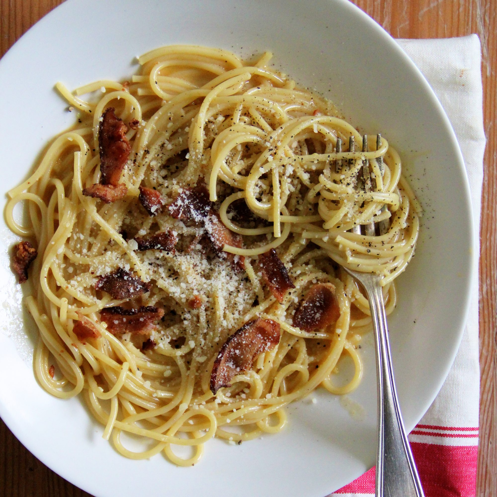

Carbonara:
Ingredients
- 100g pancetta
- 50g pecorino cheese
- 50g parmesan
- 3 large eggs
- 350g spaghetti
- 2 plump garlic cloves, peeled and left whole
- 50g unsalted butter
- Sea salt and freshly ground black pepper
Method
- STEP 1: Put a large saucepan of water on to boil
- STEP 2: Finely chop the 100g pancetta, having first removed any rind. Finely grate 50g pecorino cheese and 50g parmesan and mix them together.
- STEP 3: Beat the 3 large eggs in a medium bowl and season with a little freshly grated black pepper. Set everything aside.
- STEP 4: Add 1 tsp salt to the boiling water, add 350g spaghetti and when the water comes back to the boil, cook at a constant simmer, covered, for 10 minutes or until al dente (just cooked).
- STEP 5: Squash 2 peeled plump garlic cloves with the blade of a knife, just to bruise it.
- STEP 6: While the spaghetti is cooking, fry the pancetta with the garlic. Drop 50g unsalted butter into a large frying pan or wok and, as soon as the butter has melted, tip in the pancetta and garlic.
- STEP 7: Leave to cook on a medium heat for about 5 minutes, stirring often, until the pancetta is golden and crisp. The garlic has now imparted its flavour, so take it out with a slotted spoon and discard.
- STEP 8: Keep the heat under the pancetta on low. When the pasta is ready, lift it from the water with a pasta fork or tongs and put it in the frying pan with the pancetta. Don’t worry if a little water drops in the pan as well (you want this to happen) and don’t throw the pasta water away yet.
- STEP 9: Mix most of the cheese in with the eggs, keeping a small handful back for sprinkling over later.
- STEP 10: Take the pan of spaghetti and pancetta off the heat. Now quickly pour in the eggs and cheese. Using the tongs or a long fork, lift up the spaghetti so it mixes easily with the egg mixture, which thickens but doesn’t scramble, and everything is coated.
- STEP 11: Add extra pasta cooking water to keep it saucy (several tablespoons should do it). You don’t want it wet, just moist. Season with a little salt, if needed.
- STEP 12: Use a long-pronged fork to twist the pasta on to the serving plate or bowl. Serve immediately with a little sprinkling of the remaining cheese and a grating of black pepper. If the dish does get a little dry before serving, splash in some more hot pasta water and the glossy sauciness will be revived.
